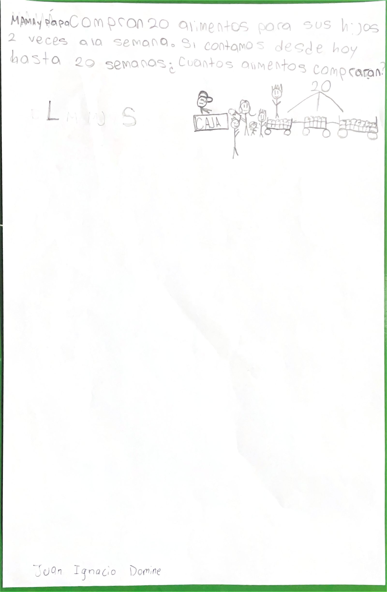
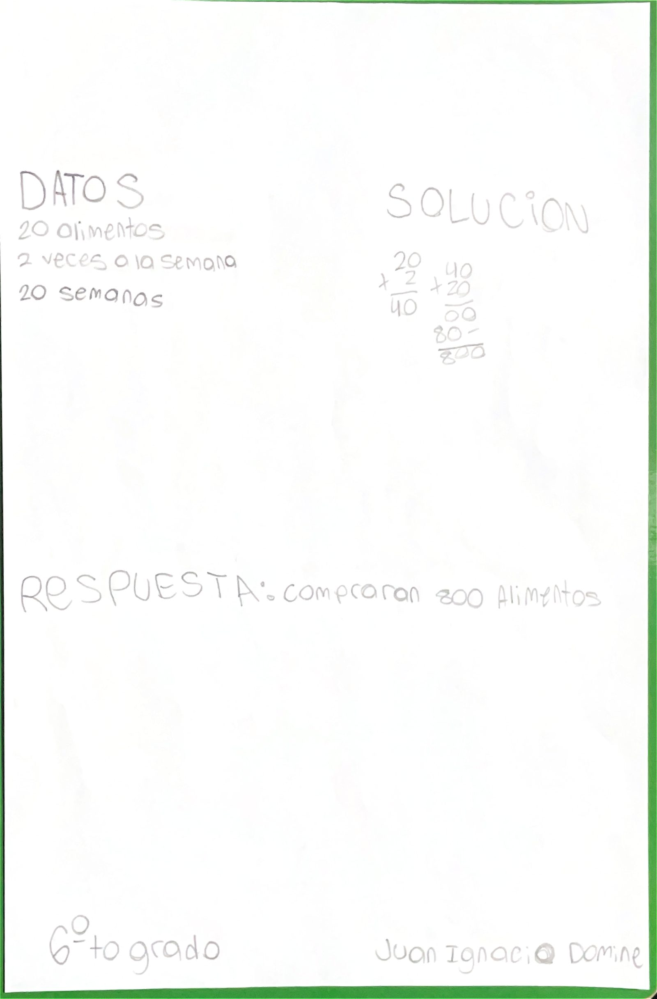

6.º grado
Juan Ignacio D.
Juan cuenta cómo se le ocurrió

Ver cómo se resuelve

Pieza 6-08 · Open House 2026 · Albert Einstein School
6.º grado
Juan cuenta cómo se le ocurrió


Pieza 6-08 · Open House 2026 · Albert Einstein School